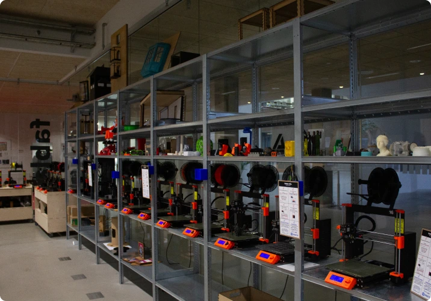
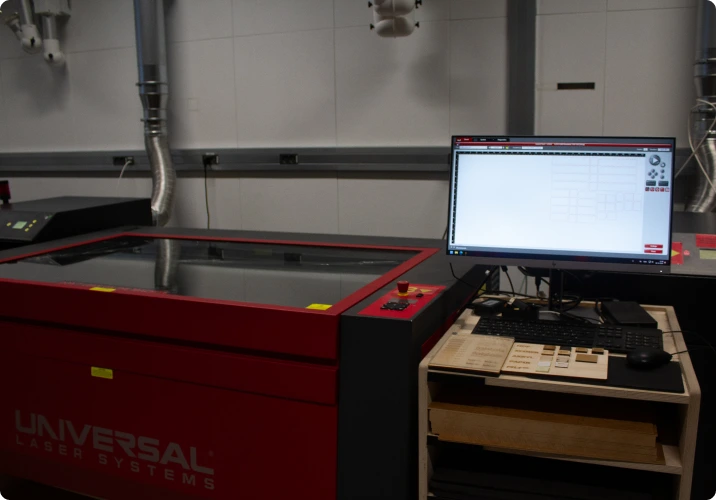
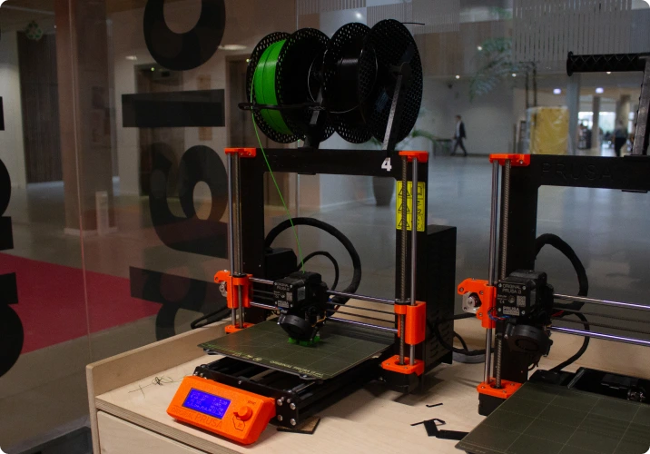

I FabLab kan du mere end du tror
FabLab for dig
FabLab er for alle UCL's studerende, men det er ikke alle som er klar over hvad FabLab kan hjælpe med. Derfor vil vi gerne fortælle hvorfor vi mener, at det er oplagt for dig at benytte FabLabs forskellige faciliteter. Tag et kig herunder, og læs mere om hvorfor FabLab er relevant for lige netop dig.
Business og
digital udvikling
Byggeri og
teknologi
Ledelse og
administration
Pædagogik og
undervisning
Sundhed og
socialt arbejde
Går du på en uddannelse indenfor Business og digital udvikling, og overvejer du om FabLab er relevant for dig?
Her hos FabLab har vi meget at byde på, og lige meget om du studerer
markedsføringsøkonom eller multimediedesigner, så er vi sikre på at FabLab
kunne være interessant for dig. I FabLab har du mulighed for at udvikle
prototyper, idegenerere og udfolde din kreativitet.
Derudover kan du
udvide dine kompetencer ved at tage et kursus til en af vores mange
maskiner. Her får du praktisk læring som du kan tage med videre i
arbejdslivet efter studiet.
Det er oplagt at benytte FabLab til
projekter, og specielt til hvis du skal lave en bacheloropgave. Her kan vi
hjælpe dig lige fra starten med idegenerering og processen frem.
Ideer til hvad du kan lave i FabLab
Du har mulighed for at lave skræddersyede genstande eller prototyper til
kunder og klienter. Du kan medbringe dem til præsentationer, hvor modtageren
har mulighed for at se en prototype med egne øjne og mærke produktet i egne
hænder.
Hvis du arbejder med branding kan du lave logoer, T-shirts,
badges mm. som er salgsfremmende for kunden. Idegenerering til
markedsføringskampagner, med mulighed for print af plakater.
Her har multimediedesignere brugt FabLab til at fremstille en prototype til deres klient præsentation.
Uddannelser under Business og digital udvikling
Datamatiker (+ online), Digital konceptudvikling, E-handel, Financial controller, Finans, Finansøkonom, Handelsøkonom, Innovation og entrepreneurship (+ online), International handel og markedsføring, International hospitality management, IT-sikkerhed, IT-teknolog, Logistikøkonom, Markedsføringsøkonom, Multimediedesigner, Produktudvikling og teknisk integration online, Service- og oplevelsesøkonom, Softwareudvikling, Sport management, Webudvikling og Økonomi og IT
Vi står klar til at hjælpe dig lige der hvor du er i processen.
I FabLab kan du mere end du tror
Hvad er FabLab?
FabLab er et prototypeværksted, men også meget mere end bare det. FabLab er et sted hvor du har mulighed for at udvikle, idegenerere og lære nye kompetencer.
Hos FabLab har vi mange forskellige maskiner såsom laserskærer, 3D-print, T-shirt print, plakatprinter og klistermærke printer. Alle studerende på UCL har lov til at benytte disse maskiner i samarbejde med de ansatte i FabLab.
Vi vil i samarbejde med dig, kunne hjælpe med at omsætte ideer til prototyper fra start til slut i processen.
SE KURSER
FabLab for dig
FabLab er for alle UCL's studerende, men det er ikke alle som er klar over hvad FabLab kan hjælpe med. Derfor vil vi gerne fortælle hvorfor vi mener, at det er oplagt for dig at benytte FabLabs forskellige faciliteter. Tag et kig herunder, og læs mere om hvorfor FabLab er relevant for lige netop dig.
-Business og digital udvikling-
Går du på en uddannelse indenfor Business og digital udvikling, og overvejer du om FabLab er relevant for dig?
Her hos FabLab har vi meget at byde på, og lige meget om du studerer markedsføringsøkonom eller multimediedesigner, så er vi sikre på at FabLab kunne være interessant for dig. I FabLab har du mulighed for at udvikle prototyper, idegenerere og udfolde din kreativitet.
Derudover kan du udvide dine kompetencer ved at tage et kursus til en af vores mange maskiner. Her får du praktisk læring som du kan tage med videre i arbejdslivet efter studiet.
Det er oplagt at benytte FabLab til projekter, og specielt til hvis du skal lave en bacheloropgave. Her kan vi hjælpe dig lige fra starten med idegenerering og processen frem.
Her har multimediedesignere brugt FabLab til at fremstille en prototype til deres klient præsentation.
Ideer til hvad du kan lave i FabLab
Du har mulighed for at lave skræddersyede genstande eller prototyper til kunder og klienter. Du kan medbringe dem til præsentationer, hvor modtageren har mulighed for at se en prototype med egne øjne og mærke produktet i egne hænder.
Hvis du arbejder med branding kan du lave logoer, T-shirts, badges mm. som er salgsfremmende for kunden. Idegenerering til markedsføringskampagner, med mulighed for print af plakater.
Vi står klar til at hjælpe dig lige der hvor du er i processen.
Går du på en uddannelse indenfor Byggeri og teknologi, og overvejer du om FabLab er relevant for dig?
Hos FabLab har vi mange spændende faciliteter som er oplagte for en studerende indenfor fagområdet Byggeri og teknologi. I FabLab har du mulighed for at udvikle prototyper, idé-generere og udfolde din kreativitet.
Tag et af de mange kurser vi tilbyder og få flere kompetencer du kan sætte på CV'et. I FabLab har du mulighed for at få praktisk læring som du kan tage med videre fra studiet og ind i arbejdslivet.
Her har bygningskonstruktører brugt FabLab til at fremstille en prototype model til deres projekt.
Ideer til hvad du kan lave i FabLab
FabLab er genialt at benytte hvis du skal lave prototyper eller mini modeller af bygninger. Med prototyper kan du tjekke stabiliteten at dine modeller, afprøve dine innovationer og arbejde med en iterativ designproces hvor du hurtigt har noget i hænderne.
I FabLab har du mulighed for at lære nyt, samt prøve at arbejde tværfagligt med din egen teori fra studiet, sammenkoblet med vores erfaring inden for designprocesser og innovation. Med prototype kan du bedre visualisere processen og det færdige produkt for din kunde eller klient - samtidig er det perfekt at benytte sig at til præsentationer.
Vi står klar til at hjælpe dig lige der hvor du er i processen.
Ikke implementeret
Ikke implementeret
Ikke implementeret
Maskinerne
Laserskærer
Laserskæring er en maskine der anvendes til udskæring og gravering af plader, ved at anvende laserlys.
Ved hjælp af laserlyset kan den brænde, smelte eller fordampe materialet, så det får en helt skarp kant og facon.
Laserskæreren kan bruges til mange formål, lige fra nøgleringe og puslespil, til større skilte og prototyper. Mulighederne er uendelige!
3D-printer
En 3D printer gør det muligt, at printe tredimensionelle figurer. Når designet er sendt til printeren, vil den begynde at fremstille figuren, ved at printe tynde lag af det valgte materiale - også kaldet filament. Når filamentet kommer ud er det opvarmet til en høj temperatur, der gør det muligt for de tynde lag at smelte sammen.
På denne måde får du mulighed for at stå med dine figurer i hånden, fremfor kun at se dem på en skærm.
Det er perfekt til prototyper og præsentationer, som man kan fremvise til sin klient eller kunde.
Udover laserskærere og 3D-printere som er de mest brugte maskiner i FabLab, har vi meget mere at tilbyde. Det er også muligt at lave print på t-shirts, printe plakater, lave klistermærker og badges mm.
Kom i FabLab og tag et kursus i maskinerne så du kan benytte dem på egen hånd!
KONTAKT OS
Maskinerne
Laserskærer
Laserskæring er en maskine der anvendes til udskæring og gravering af plader, ved at anvende
laserlys.
Ved hjælp af laserlyset kan den brænde, smelte eller fordampe materialet, så
det får en helt skarp kant og facon.
Laserskæreren kan bruges til mange formål, lige
fra nøgleringe og puslespil, til større skilte og prototyper. Mulighederne er uendelige!
3D-printer
En 3D printer gør det muligt, at printe tredimensionelle figurer. Når designet er sendt til
printeren, vil den begynde at fremstille figuren, ved at printe tynde lag af det valgte
materiale - også kaldet filament. Når filamentet kommer ud er det opvarmet til en høj
temperatur, der gør det muligt for de tynde lag at smelte sammen.
På denne måde får du
mulighed for at stå med dine figurer i hånden, fremfor kun at se dem på en skærm. Det er
perfekt til prototyper og præsentationer, som man kan fremvise til sin klient eller kunde.
FabLab byder på meget mere!
Udover laserskærere og 3D-printere som er de mest brugte maskiner i FabLab, har vi meget
mere at tilbyde. Det er også muligt at lave print på t-shirts, printe plakater, lave
klistermærker og badges mm.
Kom i FabLab og tag et kursus i maskinerne så du kan
benytte dem på egen hånd!
KONTAKT OS
Kurser
I FabLab tilbyder vi et udvalg af kurser, for at give dig flere stærke kompetencer. Vi tilbyder kurser i de forskellige maskiner, men også innovationkursus med fokus på nytænkning og idégenerering.
Badgesystem - boost dit CV
I forbindelse med vores forskellige kurser, har vi et badgesystem. Badgesystemet går ud på at man ved hvert gennemført kursus, får tilsendt sin badge (et bevis) på at man nu kan håndtere den pågældende maskine. Dette er en badge du med fordel kan bruge til at booste CV’et! Book dig ind på et af vores kurser og bliv stærk i Fablabs teknologier.
OBS. Vi gør opmærksom på at det ikke er tilladt at benytte FabLabs maskiner, uden et kursus.
Innovation og idegenerering

Laserskærer
3D-printer
T-shirt print
Plakat print
Badges
Klistermærke print
Kurser
I FabLab tilbyder vi et udvalg af kurser, for at give dig flere stærke kompetencer.
Vi tilbyder
kurser i de forskellige maskiner, men også innovationkursus med fokus på nytænkning og
idégenerering.
Badgesystem - boost dit CV
I forbindelse med vores forskellige kurser, har vi et badgesystem. Badgesystemet går ud på at man
ved
hvert gennemført kursus, får tilsendt sin badge (et bevis) på at man nu kan håndtere den pågældende
maskine. Dette er en badge du med fordel kan bruge til at booste CV'et!
Book dig ind på et af
vores
kurser og bliv stærk i Fablabs teknologier.
Vi gør opmærksom på at det ikke er tilladt at
benytte
FabLabs maskiner, uden et kursus.
Innovation og idegenerering

Laserskærer
3D-Print
T-shirt Print
Klistermærke print
Plakat
Badges
Hvem er vi?
Michael Angelo
FabLab Manager
micj@ucl.dk
Mads Nygaard
FabLab Vejleder
many@ucl.dk
Michael Hviid
FabLab Vejleder
mhni@ucl.dk
Mikkel
Studentermedhjælper
mlra@edu.ucl.dk
Praktisk information
Kontaktinformation
FabLab mail: fablab@ucl.dk
FabLab Manager Michael Angelo: micj@ucl.dk
Åbningstider
FabLab er åbent alle hverdage kl. 08:00 - 16:00.
Priser
Som studerende på UCL får du gratis adgang til alle FabLabs faciliteter, til alle dine studierelaterede projekter.
Har du lyst til at bruge FabLab til privat brug?
Det kan du også, vi tager blot en lille pris for materialerne.
Studierelaterede projekter vil altid have fortrinsret.
Vejledning
I FabLab har du adgang til en række avancerede maskiner.
Nogle er nemme at bruge og andre kræver lidt mere oplæring.
FabLab er altid bemandet af vores passionerede medarbejdere, der altid står klar til at hjælpe dig. Om du er i gang med projektopstart eller om du er nået til at lave den færdige prototype, så er vi klar.
Hvordan booker jeg en tid i FabLab?
Du kan booke tid i FabLab via mailadressen fablab@ucl.dk.
Samtidig er du altid velkommen til at kigge forbi Fablab og booke tid - eller bare kigge forbi til en snak!
Hvordan tilmelder jeg mig et kursus i FabLab?
Ønsker du at tilmelde dig et af vores kurser?
Så kan du læse mere herom i kursus-sektionen ovenfor.